已有能力
地球与全域定位、三条历史及冰川四个导演、地点操作、讲解字幕与观察记录继续可用。内容仍为选取案例，人物和建筑多为解释模型。
EXPLORE / 地球、地图与历史
全球认识建立位置与尺度，自然条件解释地区差异，人文联系进一步认识地方。
从整体到细节，用地图、资料与3D变化展示条件、过程和结果。
R90 运行基线 · 阶段探索已归档 · 2026.10.14
地球方位 → 新疆地理 → 连续历史 → 地点与操作 → 回看联系；先定位地球，再停在新疆全貌；选事件、进入地点模型、操作后返回。其他地理、历史、文化和生活线索保留在统一入口。
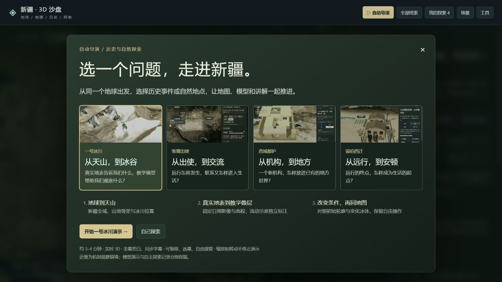
STAGE SUMMARY / 2026.10.14
先回答在哪里、范围多大，再理解西风、气候、地形等条件，随后沿丝路、历史、文化和地点案例理解人的行动与地方变化。宏观介绍为进入下一层提供理由；总图与十个分支进一步说明已有实现、参考方法、意义、扩展和开发指导。
地球与全域定位、三条历史及冰川四个导演、地点操作、讲解字幕与观察记录继续可用。内容仍为选取案例，人物和建筑多为解释模型。
认识路径和内容深度不均衡，区域与聚落细图、资料充分的故事过程、地点与环境的联系仍需补足。功能数量不能替代这些内容。
沿全球认识 → 自然条件 → 人文联系组织专题，再用适合尺度的地图、节点与场景解释问题。每轮明确资料、可见变化、用户操作及验收。
R43 / UNDERSTAND BEFORE EXPLORING
认识欧亚大陆内陆、中国西北、经纬度与邻近区域。地球看跨大陆关系，地图看区域骨架，地点与模型看具体机制。
定位新疆 ↗完整轮廓定位示意保留南北边缘，分开观察三山两盆、水系与主要城市。3D高程裁片边缘不足处不推算高程，行政名称与界线提供官方标准地图入口。
分层读地图 ↗史前、秦汉、魏晋南北朝、隋唐、五代宋辽金元、明代、清代、近现代八段索引。选时代突出关联地域；背景、节点、影响、资料和下一步观察一起呈现。
选择历史阶段 ↗吐鲁番问用水，喀什问交换，察布查尔问安顿，哈密问传习，霍尔果斯问协作，冰谷与雅丹问自然机制。每个地点说明来由、可操作内容以及模型与史实的关系，返回保留刚才的地图镜头。
这是有来源的阅读索引，仍需继续扩充地方史、遗址与专题资料。现代坐标、教学路线和原创情境分别说明；现有模型不自动当作对应时代的历史复原。
带着问题走进地点 ↗资料来源与采用范围 ↗实际验证与增量记录 ↗HISTORY / THREE QUESTIONS
先认识山地与盆地，再看外交目的、记载的经历与后续交流。喀什集市作为跨时期机制情境，比较货物怎样进入生活。
从新疆地图开始 ↗把已有地方、机构设立与地方联系放在同一张地图里理解。轮台作地域参照，抽象模型用于观察入口与内外空间。
从机构与地方开始 ↗分开看远行、抵达、安置与后期水利。近景按年代观察初期耕作、开渠和来水，保留家庭的原有选择。
从伊犁河谷开始 ↗WATCH / EXPLORE
三条历史导演按地球方位、新疆地理、历史变化、地点操作和返回顺序推进；一号冰川则从天山定位进入真实地表、流动示意与变化试验，再返回地图。下方幕次保持可选；可以暂停、缩放、自由接管和返回地图。讲解和字幕沿用已有声音，近景回应由真实模型状态完成。
“我的探索”恢复到统一主线，保留镜头、参数和选择；自动导演跟随当前主题。地点里可以直接点击“讲解当前地点”，或保存观察后回来继续。自己探索时，全域地图先停住，由你选择下一条线索；历史介绍与模型进入合并为清楚的操作。国家图层、年代索引、地形分析和原场景工具折叠保留。
01 / REFERENCE & ARCHIVE
影片用于回看探索；当前产品入口是可操作的3D工作台。
保留原文件与字幕，按需加载。
来源：Moby原帖。本地原片留档用于对照研究，公开站通过原帖观看，不重新托管原片。原应用源码、模型资产和许可未确认。
查看原帖与作者说明 ↗先建立整体位置，再在区域地图锁定乌鲁木齐一号冰川。留意山系、盆地与地点之间的尺度关系。
下载完整中文字幕 ↗33段导览与8段所选人物对白已内嵌在影片画面；静音和全屏可读。另提供完整文稿与字幕下载。
网页播放版保留完整时长、声音和内嵌字幕，原1280×720母片继续留档；这是R31历史探索记录，当前可控平台为R90。地图引导、选择、动作和回应依次展开。定位环从区域延续到地点，地域背景包围新疆生活场景；上一处已完成的观察改变下一处先关注的人。R31让定位环随地点展开，留在同一绿洲看接水、等待、田间工作与维护，再从行装旁的物品需求转向集市。交换后继续照护、装包或制作。全部导览与所选人物回应保留画面字幕，完整文稿可按实际影片时间定位。
回看历史引导演示，自己做选择 ↗03 / CONTENT & CAPABILITIES
覆盖已有具体载体，但深度不同。
点击案例资料可以核对依据。
| 线索 | 画面与互动载体 | 依据与当前边界 |
|---|---|---|
| 自然 | 冰谷、雪面、沟谷；积累／消融控制；雅丹形成动画。 | 真实地形与观测影像；过程动画为教学示意，未做变化预测。 |
| 地理 | 地球定位、三山两盆、地标、廊道、区域到局部的网格展开。 | NASA 底图与 Terrain Tiles 高程；显示高度可夸张，非测量工具。 |
| 历史 | 史前到近现代八段阅读索引；张骞、西域都护、锡伯西迁三个可控事件。时代切换改变地域与教学联系，背景、变化、影响和地点观察相接。 | 历史与考古来源索引；八段非完整地方史，现代定位参照与原创模型不是历史复原。 |
| 文化 | 庭院传习、器物、示范、轮流学习与拍点回应。 | 木卡姆记录；原创练习没有复原真实曲目、舞步或服饰。 |
| 民族 | 锡伯西迁记忆与另一社区的木卡姆传习；不同案例标明年代和位置。 | 语言文字与纪念资料；不以两例概括新疆全部人群。 |
| 经济 | 集市货物选择、使用需求、物流交接与片区分工。 | 2023 总体方案；机制简化，未接入实际贸易统计。 |
| 政治 | 历史调遣背景、当代公共需求与空间取舍、不同使用者回应。 | 历史资料与 2023 方案；三方协作是创作机制，不是官方决策程序或政策成效验证。 |
自由旋转、缩放与平移，显式选择地点和视角，按需开关标记与图层。
调整参数，运行、暂停、单步和调速；人物与物品在当前场景回应选择。
保存并恢复配置，导出参数和镜头；真实数据、原创边界与历轮素材分别可查。
CURRENT SCOPE
地图定位、三条历史探索、自然地形、用水、集市、屯居、庭院和关口等能力继续保留；自由镜头、参数、语音字幕、配置与返回仍可使用。R90补齐四条记录的恢复、主题和讲解联动；冰川有9幕导演和6段新增MiniMax旁白，真实地表、教学流动和变化试验分开呈现。没有增加新的场景或人物资产。
历史事件、现代地域参照和机制情境分别说明。地球与地点通过定位和镜头衔接，尚未实现全球连续高精度地形加载；人物与建筑仍较简化，不作特定古城或村落的写实复原。
本轮实际检查与增量记录 ↗05 / EXPLORATION & RETENTION
截图、视频、候选版本和源码按 SHA-256 共享内容；保留原路径与每轮快照。后续只记录新增和变化，完整 ZIP 按需导出。
29.2 → 10.3 GiB过程资料去重后的实际文件数据
2026.10.11 核验，不含本轮新增内容
正在读取轮次清单…
清单下载的是文件路径与校验值，不会重复打包整轮影片。页面只接入两段观看影片，其他历史素材继续在本地共享库中保留。早期不完整的源码或录像没有补造。
R86 / FOLLOW WHAT CHANGES
地球建立方位，地图提出历史问题；走进地点以后，让实际对象接着回答。当前标题、镜头、标记与字幕跟随模型状态，完成的观察可以带回地图。自由缩放只接管镜头，主动暂停才停止变化。
选择织物、补给或器物。金色线随搬运者前进，交接后看家庭使用、远行者出发或手艺人制作；未选的需要仍留在原处。
自己选择交换 ↗找到门，展开屋盖，再跟随金色标记进入、青色标记返回。暂停后仍可自由观察，部件与原操作保留。
播放并操作空间观察 ↗沿用按年代的屯居、初期耕作、新渠建设和来水回应；三个阶段分别观察，完成后回到河谷。
观察屯居与水利 ↗张骞出使与后来的长期交流分开理解；喀什集市是跨时期机制情境。轮台仅作现代地域参照，结构不证明乌垒布局或行政程序。近景仍是解释模型，人物、服饰和建筑尚未达到写实历史复原。
来源与表示范围 ↗ · 实际检查与增量记录 ↗R85 / WATER AND PEOPLE
先在伊犁河谷理解地域，再走近住处、渠边与田地。每个年代都有三个可选择的观察节点；点击播放，镜头和字幕带你看当前真正发生的变化，也可以自由转动、暂停并返回地图。
保留支流灌溉。居民从庭院走向初期田地，一人观察渠边，另一人继续耕作。
新田区先等待接水。渠槽从水源方向延伸，劳动者握住工具沿渠作业，再接向田边。
水先沿主渠前进，再进入田边支渠。田区变化随后展开，居民查看来水后转向田间。
自由镜头不会暂停变化；主动暂停后人物与工具保持位置。完成的阶段观察可以带回河谷地图。旧生活选择与形制近景仍可从更多观察中打开。
迁移政策与生产条件分别理解。初期灌溉、新渠建设和竣工放水分期呈现，未精定开工年。匿名人物、田块与渠线解释关系；不是跨42年的同一家庭、实测渠网或逐件复原。
国家民委 · 历史沿革 ↗ · 来源与表示范围 ↗ · 实际验证与增量记录 ↗R83 / DETAILS WITH EVIDENCE
男子长袍、腰带、圆顶帽和长靴，以及土坯或木架斜顶房、低墙庭院，参考国家民委的传统形制记述。人物比例、土墙木构、河面与叶形一并调整；劳动人物双手握住工具，刃部到达渠边地面。
全景、民居、服饰与劳动四种入口定位不同对象。相关介绍与字幕同步，近景收拢远处标注。
导演先看屯居与初期耕作，再沿新渠观察施工，最后跟随1808年初来水进入田边与人物回应。新旧灌溉分开。
暂停保持人物和工具位置；仍能缩放与转动。原家庭选择独立保留，观察后可返回来时地图。
形制依据不等于具体年份的逐件复原：服装颜色、裁片、人物身份与院落布局未精定；匿名人物、施工动作与渠线为原创解释模型。
R82 / SETTLEMENT THROUGH TIME
1766年安置后的初期耕作，利用支流水源；19世纪初组织新渠建设；1808年初新渠放水后，耕作范围继续扩大。新大渠没有和最初安置同时完成。
右侧住处、支渠与初期田地始终保留。切回早期时，左侧后来建造的新渠及新增田地收回。
干渠槽逐段延伸，人物沿渠劳动；放水阶段青色水流沿新渠前进，新增田垄随后变绿。动画表达变化关系，不模拟真实产量。
五段新旁白对应地点、年代与画面，三阶段可选、可重播、可暂停。原“先安顿/先引水”生活选择另设入口继续保留。
人物、服饰、建筑和渠线为关系示意，未完成清代村庄与真实大渠布局复原。依据国家民委公开资料，不精定未核实的开工年。
R81 / HISTORICAL EVIDENCE
《史记·大宛列传》记载出陇西、被扣留十余年，脱身后到大宛，经康居到大月氏，并到过大夏；归途中又被扣留，后来返汉。地图对应这些经历，不复原未经考定的行走道路。
点选七段经历或六处地域参照。拘留地点不编造坐标，地域点不表示古国边界或古都坐标。
自己对照地图 ↗沙丘、风沙和取水动作没有对应张骞路段的依据，已撤出历史导演。原模型仅保留为独立动画实验，旧素材按增量留档。
查看独立动画实验（无历史归属） ↗新旁白与地域提示对应，再回看外交结果及此后的往来。喀什集市仍是跨时期的原创交换情境，不表示张骞在此停留或汉代集市复原。
打开修正后的导演 ▷R72 / READ THE SPATIAL LEVELS
亚洲、欧洲、非洲等洲名用不同颜色与字号区分，海洋与国家保留各自样式。靠近时宏观名称收拢，国家、山系、盆地与城市逐层出现；当前关注对象优先显示。
新疆独立的暖金范围从地球延续到区域地图与历史空间，地点、联系和模型放回这个位置中理解。选择其他国家时切换到该国范围，仍能重新定位新疆。地理比较的说明与图例同步，聚焦山系时相关地点继续清晰。
洲名颜色用于阅读分层；新疆沿用定位轮廓。三条历史探索、自动导演、自由接管和返回继续保留。实际验证与增量记录 ↗
R70 / EARTH TO PLACE
张骞线：山地与盆地 → 沿通道移动的商旅 → 集市交接。都护线：已有地方 → 机构逐部显现 → 向两侧展开的双向联系。西迁线：伊犁河谷 → 抵达与安置点 → 住房、田地与家庭回应。它们继续进入各自可操作的近景。
地球保留国家范围、周边参照和自由操作。选择历史问题后，底部显示下一层要看什么；沿球面进入新疆，接上地图引导。引导可暂停、点选与重播；拖动即可接管。近景观察结束，返回来时地图。
商旅、机构、住房与动作是教学符号，不是历史场景复原。沿用既有影像、语音和近景资产。本轮验证与增量记录 ↗
R69 / FROM PLACE TO PARTICIPATION
喀什：选货物、看交接与使用。吐鲁番：沿剖面看水，改变条件并记录下游响应。轮台地区：展开屋盖，沿入口与通道观察内外往返。察布查尔：切换安置、开渠与放水的年代；原生活选择另设入口。
选中吐鲁番，后续讲解入口与地点按钮就继续通向吐鲁番。三条历史路径分别记住来时的地图；实际完成的观察按地点保留，返回后重新连接周边地理。画面底部可以直接走进当前地点，也可以先听历史或继续自由操作。
操作沿用已有教学模型，并非新增历史复原。水路是跨时期延伸；轮台是现代地域参照。观察在本次页面中保留，不跨刷新保存。保留三条自动导演与旧场景。本轮验证与增量记录 ↗
R68 / ONE CONTINUOUS EXPLORATION
先突出山地与盆地，再展开地点联系，最后靠近对应位置，显现模型预览。三条历史路径有各自的地图步骤，可以点选，也可以播放、暂停或自由接管。
看清地理以后，直接在当前地域听历史；从事件进入地点和模型，再把发生过的交接、使用或空间观察带回地图。返回恢复来时的镜头、路径与地点。三条自动导演都先经过新疆地图，再进入历史与近景。
地图引入使用同步屏幕讲解；历史复用九段已有MiniMax旁白。本轮实测走通张骞手动路径与人物回应，三条导演均检查新增地图幕；未把局部检查描述为三条全程重放。实际截图、检查与增量记录 ↗
R67 / FROM COUNTRIES TO LANDSCAPE
地球全景 → 中国与周边 → 新疆山河 → 进入新疆。不同层级对应不同观察尺度，国家定位和图层开关直接放在首屏；经纬、水汽、交流、距离与历史入口保留在展开区。
悬停名称先预览轮廓，点击再定位；小屏幕优先显示中国和新疆周边国家，也能展开更多标注。进入新疆时国家图层随镜头逐渐淡出，取消可恢复；自由操作、返回地图与三路径自动导演继续保留。
复用已有地理数据与素材，没有新增音视频副本。本轮实际画面与验证 ↗
R66 / READ THE GLOBE
浅色轮廓区分国家与地区，金色范围跟随当前选择。点击地球上的中文名称或定位菜单，镜头与范围一起变化；拉近后显示更多名称，背面的标签隐藏。新疆与八个邻国优先显示，山系、经纬和距离图层继续可用。
可以分别开关国家边界、国家名称与分区着色，继续自由旋转、进入新疆地图，或从自动导演选择历史路径。
轮廓使用 Natural Earth 1:50m 公共领域数据，保留其现代实际控制范围表示；虚线为来源中的争议或未定段。数据版本与处理记录 ↗ · 本轮截图与验证 ↗
R86 / WATCH AND EXPLORE
大陆方位 → 中国与周边 → 新疆山河 → 读地形、找地点、提出历史问题 → 连续历史变化 → 地点与操作 → 回看联系。地球与地图均有配音和同步字幕，当前讲解对象在原地高亮；镜头到位后才开讲。背景、过程、影响随后连续展开，再等待人物实际回应。右侧保留位置图和前后线索，底部字幕与播放不覆盖画布；顶部层级和下方常驻幕次可直接选择，说明按需打开。静音时也能跟随需要、交接和人物使用。
先读盆地边缘的地理，再连续观察出使目的、后续往来和长期交流，最后走进喀什集市。依次看织物交给家庭、补给支持远行、器物进入制作。
选择张骞路径 ▷天山南侧 → 已有地方 → 机构设立 → 地方联系 → 轮台地域参照。高亮入口、展开屋盖、沿通道进入并返回。
选择都护路径 ▷先辨伊犁河谷与察布查尔，再看盛京方向的出发、抵达与安置。近景分别展开1766年初期屯居、19世纪初新渠建设和1808年初放水，观察人物作业、来水与新增耕地。
选择西迁路径 ▷观看时可以滚轮缩放、拖动转动，旁白、字幕与模型动作继续。主动暂停后调整镜头仍保持暂停。点击“恢复导演镜头”回到本幕构图；下一幕恢复该幕镜头。下方直接选幕，小屏可横向滑动。明确选择“自由探索”或“返回地图”才退出导演；返回保留当前路径的地点。刷新只打开入口，不强制播放，导演结果与自主探索记录分开。
当前三条导演共43幕，全部配置讲解与字幕；37个有效录音继续共享，锡伯路径R85更新五段MiniMax旁白，模型依次呈现初期耕作、扩耕需求、开渠、来水与人物转向田间。原录音与旧版验证保留在过程记录。张骞集市的观察记录由人物实际使用触发，返回地图显现已看过的用途。路线是联系示意，近景是机制观察；出使与长期交流、现代轮台与乌垒研究、抵达与后期建设分别表达。R78选幕与镜头交互验证 ↗ · R76样板、音频与实际验证 ↗ · R74有声引导 ↗ · R73顺序修正 ↗ · R65建立记录 ↗
R63 / PLACES, ROUTES AND GEOGRAPHY
在同一颗地球上，交流展开盆地两侧联系，都护显现机构与地方联络，西迁从起讫靠近伊犁河谷。点击山地、盆地或河谷突出位置，可切换“只看地理”对照历史联系，暂停或重看地图变化。选择地点后仍保留原地图，再主动进入模型。
长安方向、敦煌与盆地西缘同时建立方位。再选择喀什的交换或吐鲁番的用水问题。
观察交流联系 ↗把轮台参照点放回天山、盆地与地方联系之间，再主动进入城门和通道结构。
观察机构与地方 ↗先看盛京方向与伊犁的起讫，再靠近河谷与察布查尔，走进家庭观察安顿与用水。
观察迁移与安置 ↗关系线是地理与机制示意；不表示考证行程、历史辖境或遗址复原。近景仍使用已有教学模型，全球高程流式加载与写实资产未在本轮实现。本轮记录 ↗
R61 / READ THE MAP, FOLLOW THE QUESTION
先在画面上读到“在哪里、为什么看这里”，再点选三步观察：镜头和事件进度同步改变。地名下说明该地点在当前故事里的作用；字幕下的下一步按钮把背景、过程、影响与地点探索接起来。完整讲解和资料保留在侧栏，旧有模型、材质和动作继续沿用。
人物、建筑和商旅队列随地图地形落地，细路线连接地方，柔和的地面边缘与接触阴影让集市和聚落接入山河。靠近后看土墙、布面和木纹，也看货物怎样递出、被接住，再带向下一处。原九段MiniMax故事讲解与字幕沿用，播放、暂停和静音仍由你控制。
人物和建筑随显示地形贴合，集市与聚落去掉整块矩形底板。商旅沿低浮高的细线前行，天山、盆地与河谷仍帮助判断位置和环境。
靠近、递出、接住、查看、带走逐步发生；手臂与腿部增加关节变化。门前接待、家庭安置和田边活动各有回应，短提示显示当前真正发生的动作。
切换全局、变化和局部观察点，也可拖动接管镜头。选择地点后主动进入模型，完成操作再把观察带回地图；原有选择、字幕与暂停继续保留。
先理解寻求结盟的外交目的，再看出使与后续往来，最后观察长期交流如何连接聚落。主动进入喀什集市，选择织物、补给或器物，看谁接手、怎样使用，再带回交流地图。
开始张骞探索 ↗地方聚落先存在，前60年机构出现，随后展开地方联系。主动进入轮台地区的抽象结构，观察标记从外侧穿过城门、沿通道进入内部再返回；可暂停、重置，屋盖自行控制。
开始西域都护探索 ↗分别理解1764年出发、1765年抵伊犁与1766年安置，再进入屯居与水利关系模型。初期支渠灌溉保留，新渠建设、1808年初放水和新增耕地分期发生；原家庭选择可单独打开。
开始西迁探索 ↗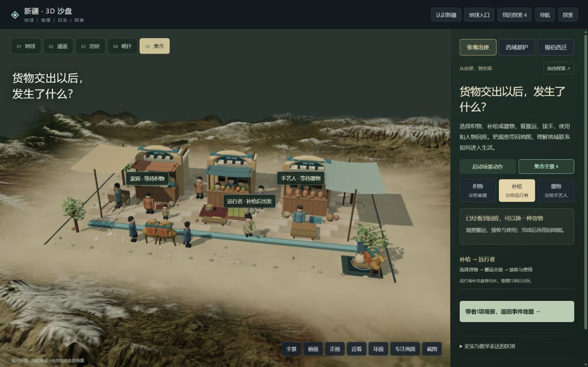
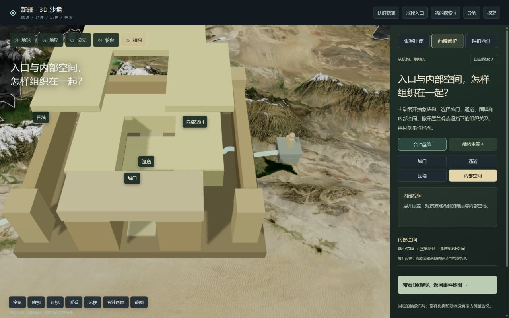
当前仍是可操作的教学原型。讲解为合成语音；金线不复原张骞行程，轮台和结构不复原乌垒，内外联系不复原行政流程，家庭为原创情境。局部模型仍是独立尺度，全球连续LOD与近景资产品质仍待完善。三条路径保留本页的事件进度、模型选择、镜头与观察；刷新只恢复URL中的路径与历史进程。原视频、已有音频和历轮素材继续共享。
本轮材质是程序表面细节，地面与接触阴影服务于教学模型的融合；人物交接、门前接待与安置活动是原创情境，不是历史实景或行政过程复原。
R61画面联动与增量记录 ↗ · R60画面介绍记录 · R59地图融合、人物动作与增量源码记录 ↗ · R58画面与观察点记录 · R58实际截图 · R57故事讲解记录 · R57讲解截图 · R56连续地图记录 · R56地点入口截图 · R55路径建立记录R54 / FROM A JOURNEY TO A HOME
从地球找到新疆，沿同一球面进入伊犁河谷；把地域关系放回1764—1766年的西迁与安置，再自己决定是否进入察布查尔的家庭情境。每一步说明为什么来到这里，也允许返回、跳转和自由观察。
青线表示河谷地域关系，金线表示迁移起讫方向。背景、过程和影响改变实际路线与安置符号，后期渠网单独说明。
默认近景按1766安置、19世纪初开渠与1808放水展开；原有生活情境可单独打开，比较安排次序。门前与水闸标记随状态变化，静音也能看到发生了什么。
回到伊犁河谷，区分迁移、初期屯居和后来水利建设。原生活实验仍可比较安排次序，回应完成后记录；原选择、镜头与暂停状态继续保留。
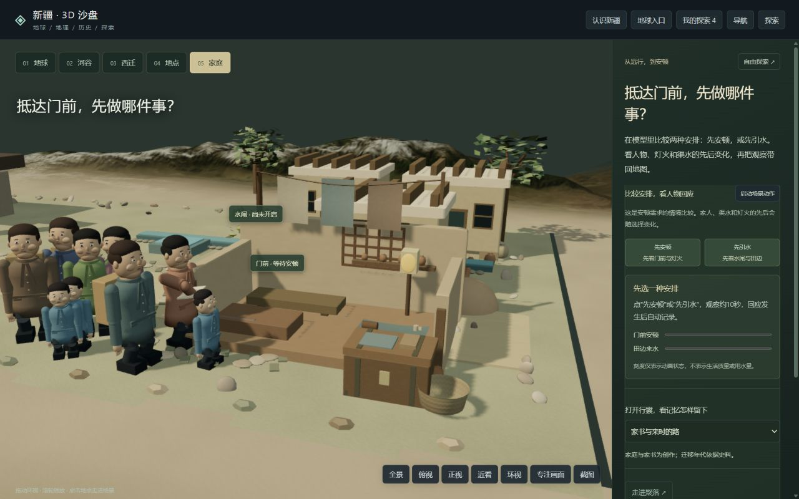
历史年代有资料依据；线路、聚落和家庭为教学表达，不是考证行程或实景复原。家庭选择不代表真实历史决策。观察记录和精确镜头属于本页打开期间，刷新后不保留；URL保留路径、尺度和事件进度。原有全部探索能力可随时打开。全球连续LOD、资产写实程度和更多历史事件仍待完善。
本轮验证、截图与增量源码记录 ↗R53 / HISTORY ON THE SAME EARTH
地球建立方位，整体地图提出地理问题，历史事件继续发生在同一球面。切换背景、过程、影响，地点、联系线和3D符号一起变化；暂停、回拨或自由转动，都不会替你进入下一层。
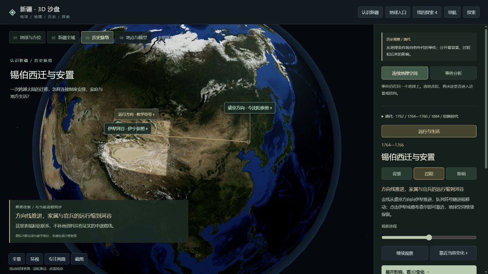
从山地、盆地与东、西两侧参照读往来条件。金线和交接符号推进，多地点联系与交换符号显现。选吐鲁番比较停留用水，选喀什参与交换。
操作出使与交流地图 ↗灰色地方聚落先保留；轮台地域参照旁显现城门、围墙与院落，再展开联络线。选点之后，主动打开机构工具；结构返回恢复原球面事件与镜头。
操作机构与地方地图 ↗盛京方向与伊犁放在同一个地球上。方向线推进，再靠近察布查尔；住房、田垄先出现，随后引出后期渠水。选地点后可进入分期近景，切换初期屯居、新渠建设与放水；原家庭选择另设入口。
操作西迁与安置地图 ↗点球面标记或地点列表，只进行定位并说明来由。地点之间的相对位置继续保留，未选择时不会自动进入模型。
事件分析是主动打开的展开视图。近景也先读地点，再点模型；用水、家庭与集市的原选择和人物回应保留。
回事件恢复进程、选点和原镜头；回新疆全域恢复所选主题与视角。镜头恢复属于本次会话；链接保留事件、进程、节点与视图类型。
目前三个事件有可逆3D过程，其他时代仍是资料与地域索引。地点使用现代地域参照；联系线、机构、住房和人物为教学符号或原创情境，非行程、管辖边界与遗址复原。迁移、安置和后来的修渠分别说明。固定区域地形、全球连续LOD与近景写实程度仍有边界。
事件、来源与表示范围 ↗ 实际操作、候选截图与增量源码记录 ↗R52 / KEEP THE GEOGRAPHIC SPACE
地球到新疆的入口，继续沿同一个球面靠近。轮廓外的周边地形仍在，区域影像与高程贴回经纬位置。进入地点也先在地球表面定位，用户主动打开模型后，才换到结构或人物的尺度。
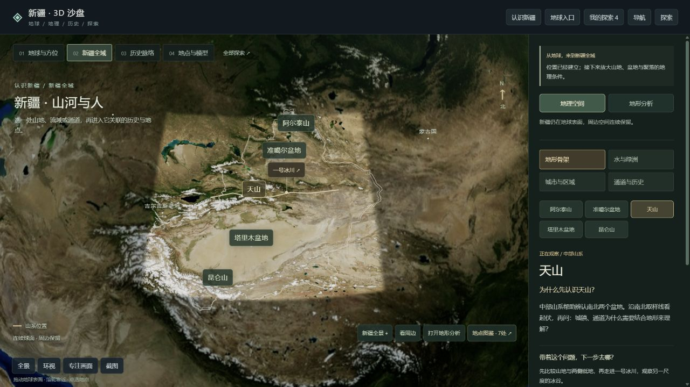
从地球看位置，逐步靠近新疆。自由拖动、缩放、选择地图对象，或退远观察周边；靠近过程可以取消。
操作连续球面地图 ↗主动打开区域地形工具，侧看起伏、读取高程剖面。回到地理空间时保留先前球面镜头，不把分析模型当作自然放大的地球。
打开地形分析 ↗先确认地点，再打开地下水路、冰谷或生活情境。模型与空间各有用途，返回恢复地点和镜头，原选择与回应能力保留。
先定位吐鲁番 ↗沿用NASA全球与区域影像、原DEM及教学参照。区域高程显示6倍夸张，数据范围外保留全球影像，不推算高程。当前为固定区域网格，不是全球瓦片流式加载或任意尺度连续LOD；历史分析与近景模型仍采用原分析场景。
数据与视图边界 ↗ 前后画面、实际检查与增量记录 ↗R51 / OBSERVE, CHANGE, COMPARE
地球建立位置，通道地图提出补给问题；历史事件之后，先到吐鲁番观察用水条件，再走到地面生活。最后在地图重新定位喀什，参与一次交换。每一步可以暂停、改选或返回。
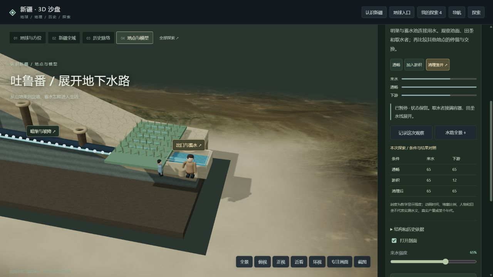
四处观察对应取水端、竖井、暗渠、出口与蓄水。点标记只调整镜头，运行或暂停状态保持；自由拖动始终可用。
操作水路观察站 ↗降低来水，或保持来水并加入淤积。水线、清理动作、池面、田垄和取水者跟随响应；变化稳定后记录一次，再比较条件与结果。
从淤积条件开始 ↗地下结构接到原绿洲生活用水选择，再回地图定位喀什、观察货物交接与使用。返回水路，保留本次观察与对照。
在地图比较喀什 ↗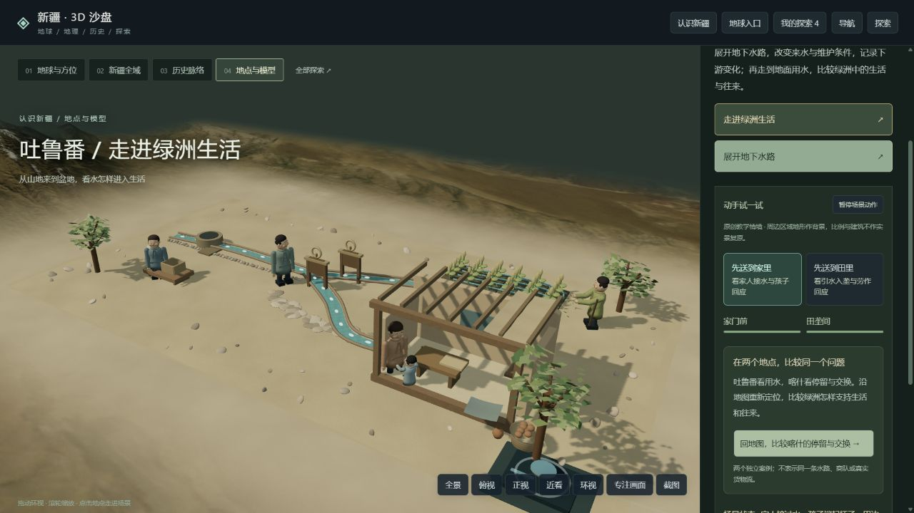
出使事件到工程，是跨时期的机制延伸；吐鲁番与喀什，是两个独立案例，不构造一条连续水路或同一商队。新增人物、维护动作和植物为原创简化模型。其他时代的事件过程、全球连续LOD与写实资产仍待完善，既有场景、声音和影片继续保留。
结构依据、模型边界与保存范围 ↗ 实际路径、候选画面与增量记录 ↗R50 / CONNECT THE SCALES
地球建立方向，整体地图解释条件，历史事件展现变化，地点模型让你操作机制。每层保留来路说明；背景、过程与影响直接改变3D对象，可以暂停、倒退、自由观察，再走近一个地点。
在球面看大陆位置与联系方向；下一层放大到山地、盆地与绿洲。气候入口接伊犁河谷，交流入口接天山南侧观察线。
选中通道、河谷或山地，知道地理条件后，再分年代观察事件与后来的变化。返回保留选点与本次稳定视角。
推进金线与队伍、交换网络、机构或家庭聚落；说明和画内标记同步。每一步由你启动，完成后停住，也能拖动回看。
把往来转成一次交换，把远行转成安顿需要。先定位地点，事件图标淡出，再走进模型；操作后回历史保留进度和观察镜头。
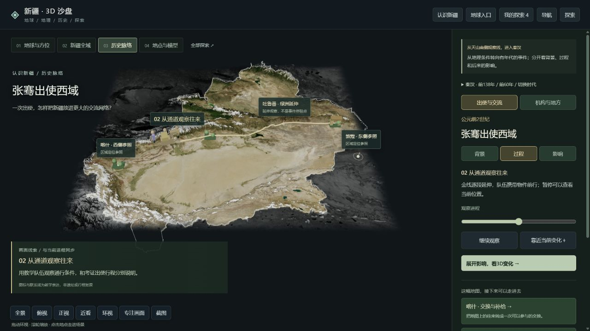
地图上的网络接到可参与的交换：选织物、补给或工艺物品，看搬运、交接和使用。人物、货物与集市是原创教学情境。
自己推进交流变化 ↗在同一时代改选事件，建筑和联络对象一起变；进入保留的结构工具，观察城门、通道与内部空间。地域参照不等于乌垒遗址坐标。
自己观察机构展开 ↗方向、抵达、安置与后续修渠分别呈现，再走进家庭比较引水、照护和带来的物品。不同年代的生活延伸不合成同年结果。
自己推进远行与安置 ↗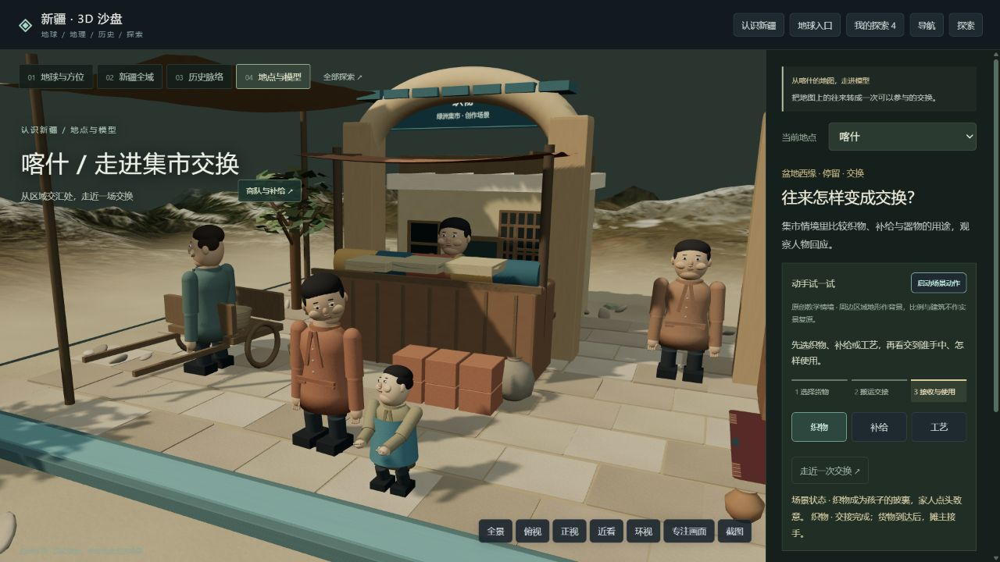
八段历史仍是阅读索引；秦汉与清代的三事件已在当前引导中直接操作，其他时代尚无同等过程模型。图标、教学联系和原创生活场景与史实分别说明。原完整事件工具、自然场景、自由操作、声音与影片保留，未实现全球连续LOD或新增历史复原资产。
衔接方式、来源与表示范围 ↗ 实际路径、画面与增量记录 ↗R49 / QUESTIONS ON THE GLOBE
找到新疆 → 确定位置 → 理解环境 → 连接历史 → 走近山河。五个问题可以按顺序探索，也可以直接选择；原六种图层加上西风与内陆、大陆与交流共八种主题，自由旋转和返回保留。
赤道、经纬网与北半球纬度观察带在球面展开；两条参考线交于乌鲁木齐。旋转地球，坐标继续固定在原处，帮助区分地图方位与屏幕方向。
自己转动观察 ↗青色带分段靠近大陆内部；点击球面标记或拖动进程，说明与图形同步。演示可暂停、回放，随后进入伊犁河谷的区域水系与山地观察。
观察西风与内陆 ↗金线逐步连起地域节点，分支体现多通道的理解线索。带着补给和交流问题进入新疆地图，再操作汉代事件或走近喀什；不把这条教学线当作张骞行程。
观察大陆与交流 ↗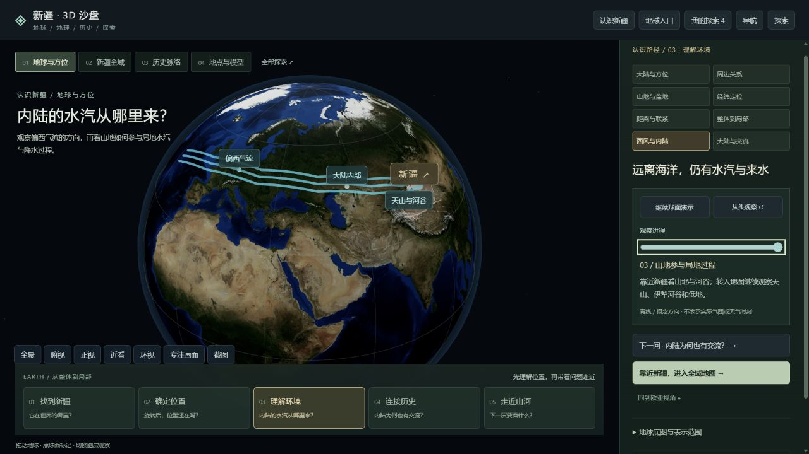
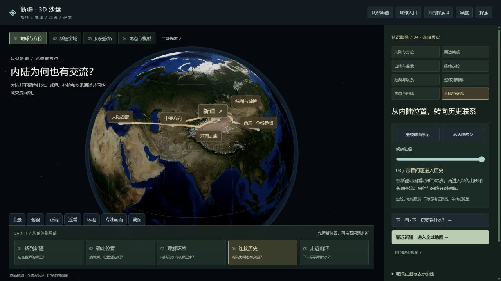
大陆与海洋、八个邻国方位、三山两盆、五个现代城市的球面距离比较和地球全景/欧亚大陆/靠近新疆三个尺度继续可用。国家点不是国界，距离线不是出行或历史路线。
周边关系 ↗ · 城市远近 ↗ · 整体到局部 ↗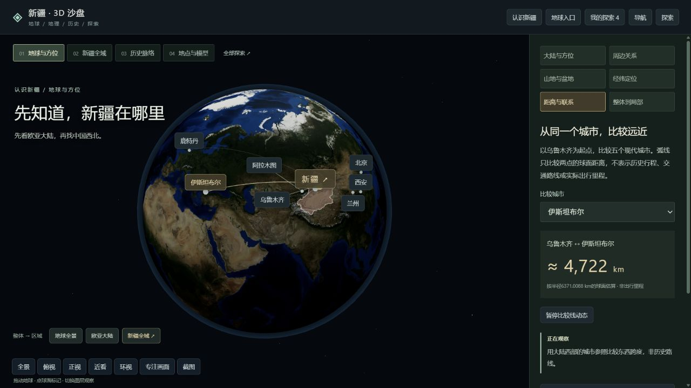
NASA 2004年6月影像继续共享；提高暗部可读性，不表现实时昼夜。气流、山系和交流线为教学示意；不是天气模拟、全球高程或历史测绘。气象研究为具体天气个例，不能当作全疆统一气候。旁白和旧声音保持原有版本，本轮没有生成新配音。
本轮参考、来源与表示范围 ↗ 实际画面与增量记录 ↗ 原地球图层来源 ↗R48 / READ THE LAND, THEN EXPLORE
选择一处山地、盆地、流域或通道，地图图形、镜头、高程剖面和下一步入口一起变化。你可以沿白线读地势，再进入对应时代或具体地点；回到地图继续比较。
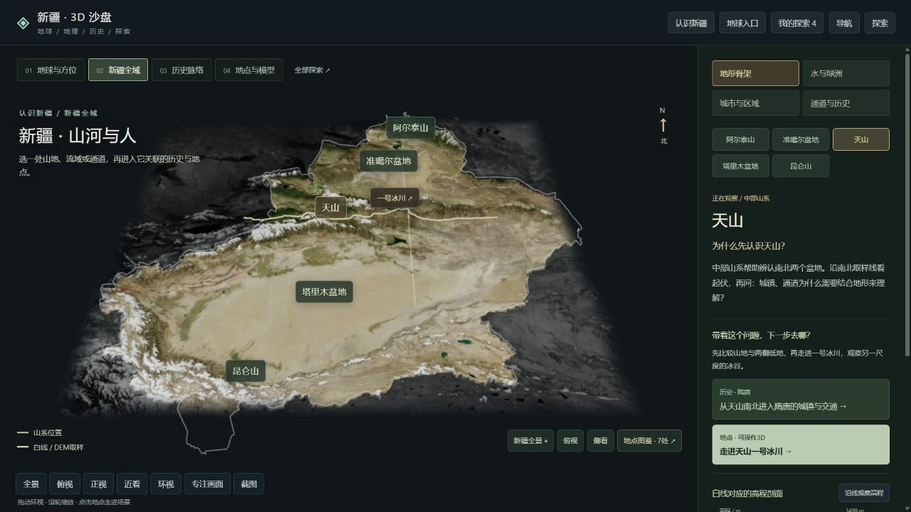
五个地形对象、三个水主题对象，可以选中和靠近。白点与真实DEM剖面联动，扫描能暂停；吐鲁番连接地下水路，伊犁河谷连接有年代的西迁与家庭。
从伊犁河谷进入探索 ↗14个主要城市参照各有位置与镜头。先找乌鲁木齐，再比较喀什、伊宁、哈密与和田；北向箭头随地图旋转。微型积木只作城市符号，正式政区另有官方地图入口。
自己寻找城市 ↗天山南侧与伊犁河谷是两条地理观察线。进入秦汉或清代时保留刚才的条件与镜头，再操作张骞、都护或西迁；返回接回地图，地点模型仍可暂停、改选与自由观察。
沿通道进入历史 ↗山系线与流域关系为概括位置，白线是DEM取样，通道线不是考证道路。空间联系不自动证明历史因果；进入通用工程或生活模型继续比较机制。全球连续LOD与近景写实资产仍待完善，既有影片、声音和场景保留。
地图对象、来源与表示范围 ↗ 实际操作、前后画面与增量记录 ↗R46 / WALK IN, CHOOSE & OBSERVE
先在地图找到位置，再靠近正在发生的交换、安顿、传习或交接。操作能改变物品、动作和空间；随时暂停、转动镜头，或返回刚才的地点地图。
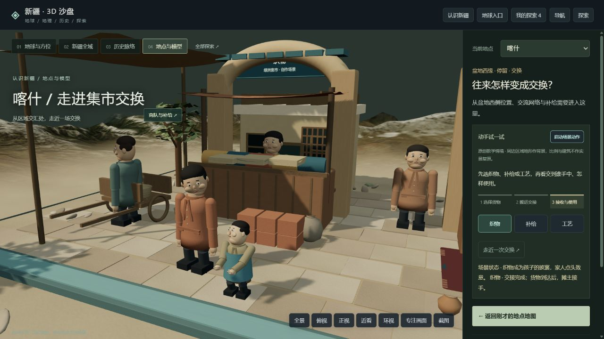
选择织物、补给或工艺，看搬运、交接与使用。货台、编篮、储货和手推车围绕这件事情布置；商队留出前景，让接收者的回应可见。
选择一次交换 ↗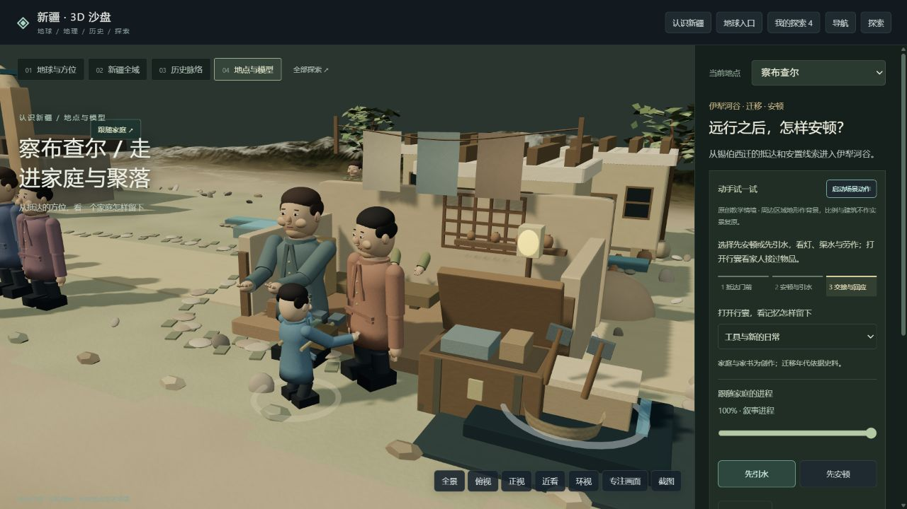
选择先引水或先安顿，一家人缓步走到门前；灯、渠水与劳作出现先后。打开行囊，家书或工具交到孩子手中，原进程滑杆可以回看远行。
安排抵达后的生活 ↗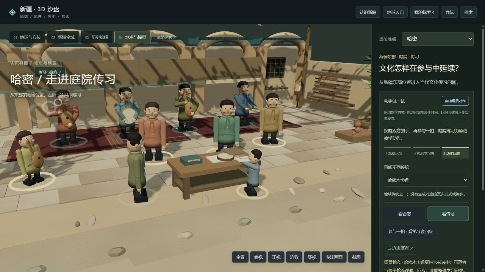
先观察示范者的手，再参与一拍，桌边学习者随即回应。铺地、枝蔓、器皿和沿墙坐凳构成日常庭院；资料可以比较，练习动作不冒充真实曲式。
参与庭院传习 ↗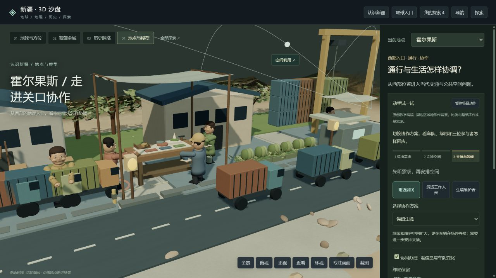
听居民、工作人员与维护者的需求，选择协作方案。绿带、移动与等候车队一起变化；单据、遮棚和行人边缘让交接发生在具体的空间里。
比较关口协作方案 ↗四幕是原创教学情境，地理位置为理解入口；建筑、服装、器物与动作不作特定时代或民族生活的实景复原。真实地表来源、历史资料和原事件继续保留。
本轮实际截图、操作与增量记录 ↗R45 / PLACE, ENVIRONMENT & PEOPLE
绿洲增加土壤微表面、渠岸与步道、田边植被和不规则树冠。周边区域地形柔和衔接地面，家门旁有遮布、器皿和编篮；风与场景时钟一起暂停。
衣服有更自然的轮廓、衣领与接缝，等候时轻微换重心，原视线、接触、接水与交接继续联动。选择先到家里或田里，可以观察两条水路抵达的先后。
自己安排一次用水 ↗先在地图上靠近地点，再进入场景近景；途中可以取消或拖动接管。返回恢复进入前的位置，保留地点与场景切换。
从喀什走进交换 ↗环境与人物是原创教学表达，比例、建筑、服装和植物布置不作实景复原。公开高程与影像沿用原来源；本轮没有新增扫描数据、重新制作影片或生成声音。
查看实际截图、验证与增量记录 ↗R44 / WALK INTO THE SCENE
地图保留地形骨架，增加可探索地点与真实场景预览。走近地点后，取样点与公开高程剖面同步；先看到进入哪里、可以做什么。
观察吐鲁番地理入口 ↗在同一个地点比较地下水路结构与绿洲用水情境。选择先到家门或田垄，水路、人物动作与接水回应在画面里发生；可暂停、拖动和返回。
操作绿洲生活 ↗集市选择货物，家庭选择安顿，庭院参与一拍，关口比较协作与空间。操作直接出现在地点页，镜头靠近对应对象，回应与当前动作同步显示。
走近集市交换 ↗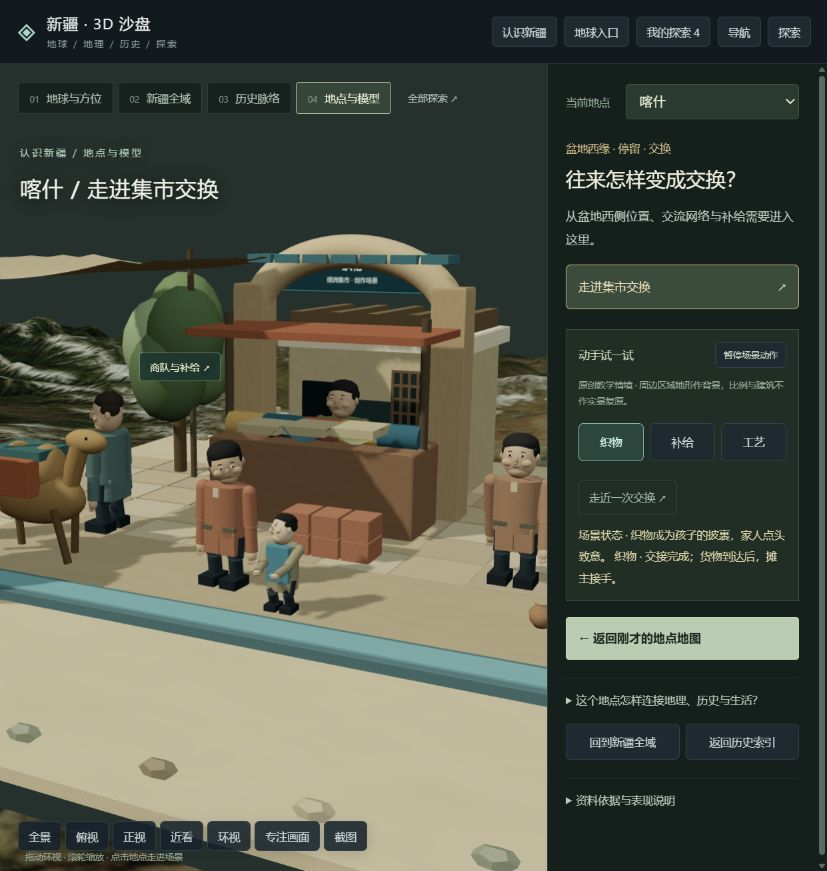
七条取样线是地理比较，不表示真实水流、历史行程或地点之间的因果证明。近景地表仍用既有数据；人物与建筑仍是原有教学模型。历史索引、三事件、14场景、原影片、声音与字幕均保留。
查看本轮审查、操作验证与增量素材 ↗R42 / MOUNTAINS, PASSAGES & OASES
地球定位 → 三山两盆 → 历史通道 → 吐鲁番 → 地下水路。每步围绕一个地理问题展开；你可以自由转动、切换步骤、比较路线、靠近地点或返回全部主题。
公开高程取样线与剖面对应同一位置；切换侧视、俯视，观察山地与盆地。地形边缘淡化，主体保留更多画面空间。
操作三山两盆 ↗直线与盆地边缘线同时改变地图、高程取样和距离。沿线观察点与剖面游标同步，可暂停或拖动；也能打开原有张骞事件继续探索。
自己比较通道 ↗走近吐鲁番，先看山地与低地的位置，再展开通用地下水路。操作剖面与来水，点竖井、暗渠和出口标记；返回通道保留选择和本次镜头。
从吐鲁番进入水路 ↗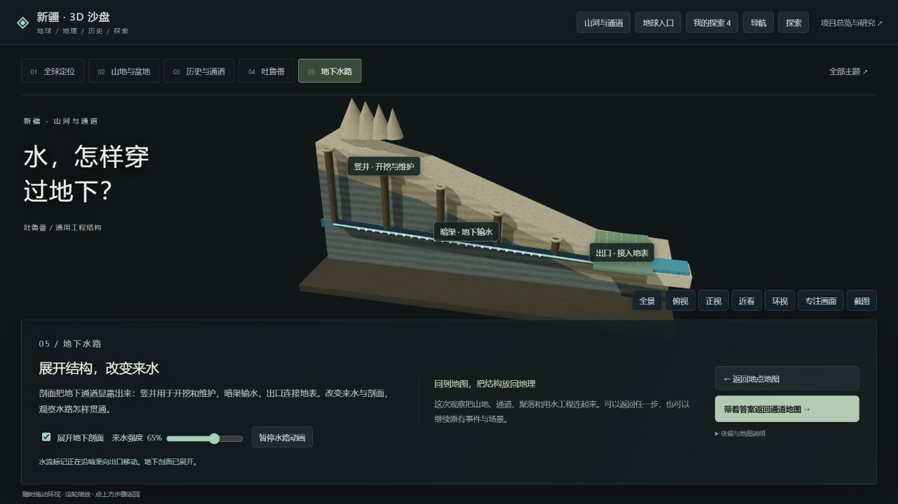
14个原场景、三条历史事件、自由镜头、参数、配置和探索记录继续可用。原片及R31历史影片留在下方；本轮交付是可操作网页。新增截图、候选与源码按SHA-256增量保留，原有影片和音频复用同一份素材。
取样线和通道为教学几何；实测高程不证明道路可通行，也不证明张骞逐站行程。吐鲁番是用水工程的延伸观察，模型不指定建造年代。区域近景仍用同一份NASA区域影像，尚未实现全球连续地形分级加载。
区域地图接入NASA 2004年6月500米影像，山脊与盆地细节来自原始裁片；高程仍使用既有公开DEM。
查看浏览器验证与过程记录 ↗R40 / READ CHANGES IN SPACE
背景告诉你从什么条件出发，过程让路线与对象动起来，影响把联系与生活展开。点击下一步，变化运行后停在观察点；画内标记可以靠近对应对象，地点会告诉你为什么来到这里、还能探索什么。
先辨山地、盆地、教学通道与绿洲补给点，再看携物队伍前行，最后展开交换台、人物接货与多方向网络。进入喀什模型，选择物品看实际使用与回应。
从背景开始操作 ↗已有地方聚落与联系先出现，机构建筑逐步展开，传递物件的人员沿联系往返。走近轮台地区参照，继续展开屋盖、选择通道与内部空间。
观察机构怎样展开 ↗以小地球交代全球方向，再到伊犁抵达参照，随后住处、田地和家庭出现。后续水渠单独展开；进入安置生活模型，比较引水、照护与带来的物品。
从远行走近生活 ↗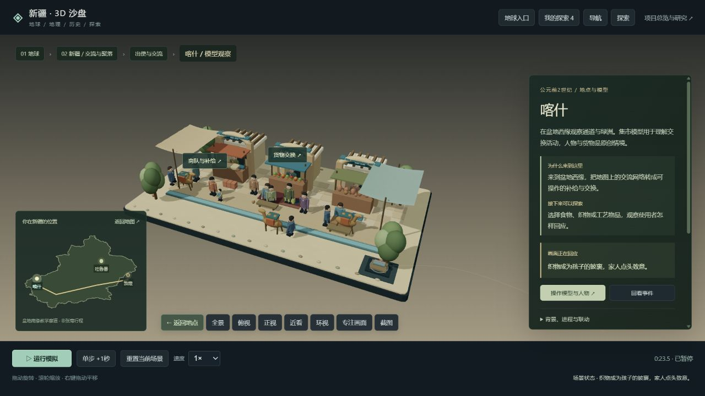
暂停、续播、倒退、改选阶段与自由镜头保留。模型进入前先靠近地点，可中止；返回恢复原主题、选点与镜头。原14个场景、保存配置、探索记录、影片与声音继续可用。
路线和模型是地理联系与机制示意。长期交流网络不等于一次出使的即时结果，西迁方向不表示逐站行程，安置与后续引水分时表达。尺度切换仍采用定位、靠近和画面过渡。
查看实际验证与增量过程记录 ↗R39 / CONNECTED EXPLORATION
地球 → 新疆整体地图 → 地理与历史主题 → 事件背景、过程、影响 → 地点与模型。每一步可以改选、自由观察或返回；进入模型后，所在位置和关联地点仍然可见。
从全球定位进入新疆，以三山两盆、水与绿洲和历史路线选择探索方向。图鉴可直接选点，先靠近，再打开关联模型。
自己操作新疆地图 ↗张骞出使、西域都护、锡伯西迁各有节点和空间对象。沿背景、过程、影响运行或拖动进度，观察路线、交换网络、机构、聚落与水渠的变化。
选择事件并观察变化 ↗在模型内改选定位小地图，同步改变地点和适用模型。操作人物与物件，当前回应出现在画面中；返回保留原主题、选点与镜头。
直接操作集市模型 ↗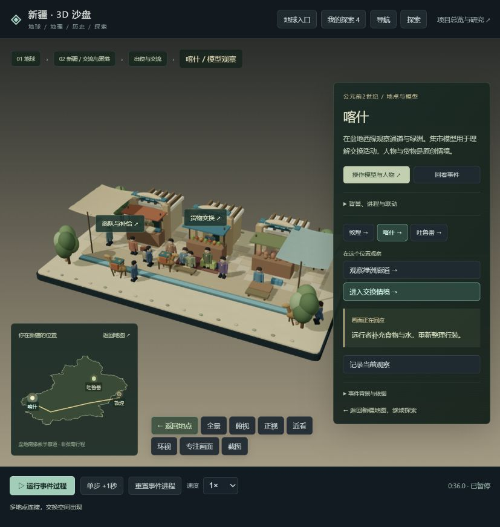
14个原场景、自由镜头、过程控制、参数、观察记录与旧配置继续可用。实际页面导出、导入恢复模型镜头，并能返回原水主题与吐鲁番选点。三事件连续切换3轮，GPU几何与纹理数量未随轮次增长。
复用原有影像和高程，事件路线为地理联系示意；地球与区域通过定位和画面过渡衔接，尚未实现全球连续地形分级加载。
实际操作、验证与增量保存 ↗R38 / MAP & THEMES
从全球方位进入新疆全貌，以三个问题选择探索方向。地图占据主要画面；工具按需打开，原有场景、观察记录与配置继续保留。
三山两盆在真实高程与影像上定位，轮廓强调新疆。点选天池、冰川与雅丹，先靠近地点，再进入模型。
观察地形格局 ↗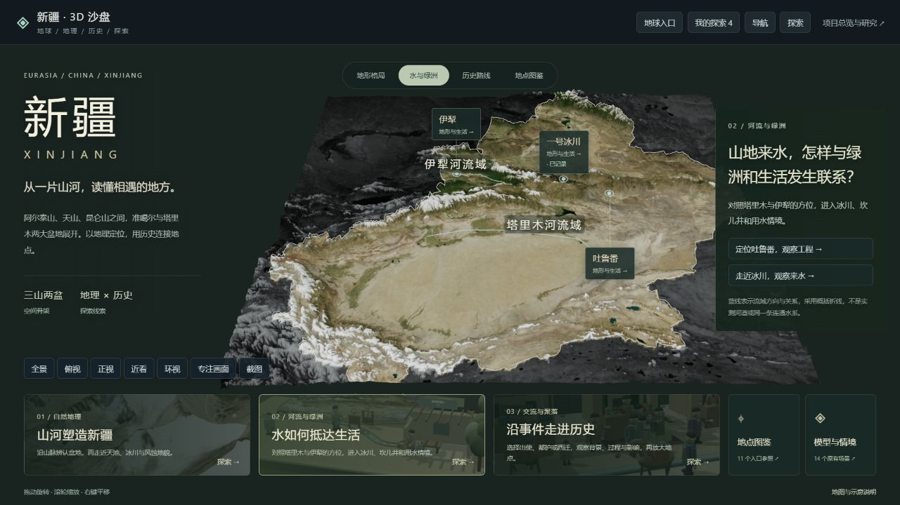
蓝线概括塔里木与伊犁流域方向；从地点进入冰川、坎儿井和用水情境。关系示意不代表河道测绘或实测连通水系。
对照水与绿洲 ↗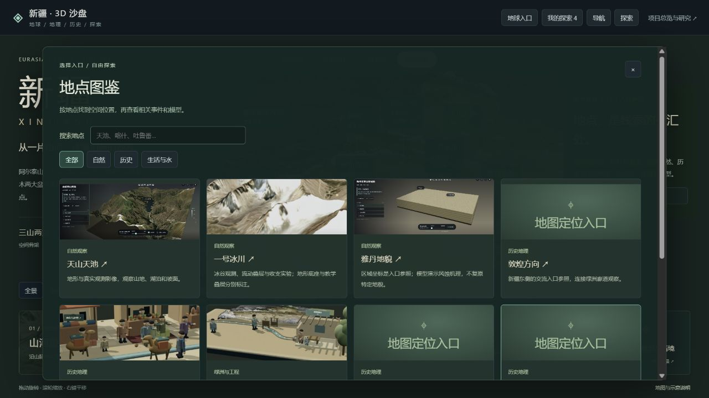
历史视角展开廊道与三条事件。11个地点参照可以分类和搜索；模型目录保留14个原有场景，用户选择进入并控制过程。
从事件打开地图 ↗地图视角与选点可随配置导出、导入恢复，旧配置和记录兼容。轮廓采用DataV公开GeoJSON简化；虚线部分超出现有DEM范围，仅用于定位。原始影像、影片和音频继续复用。
实际操作、来源与增量记录 ↗新增轮廓来源与处理记录 ↗R37 / EXPLORE & RETURN
地球定位新疆。整体地图可切自然地理、历史入口或合并显示；标记连到具体空间位置。
点击下一步，路线、结构或安置过程运行后停在观察阶段。自己暂停、倒退、调速或直接选地点。
进入集市、家庭或结构，保留原来的历史线索。自由接管模型，选择物品或生活需要，看画面反馈。
我的探索保存位置、镜头、参数与实际回应。切事件保留各自进度；返回恢复镜头和选择。
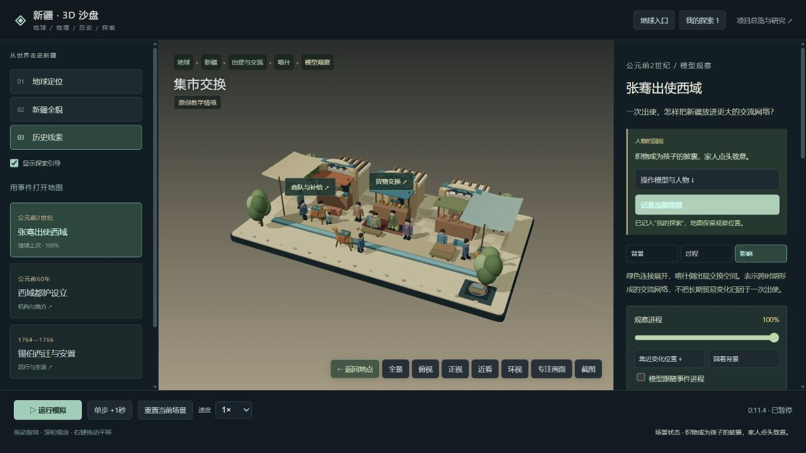
从交流网络的地域参照进入原创集市，选择织物、补给或工艺物品。操作模型会接管事件联动；记录时暂停，保留当时状态。
操作集市模型 ↗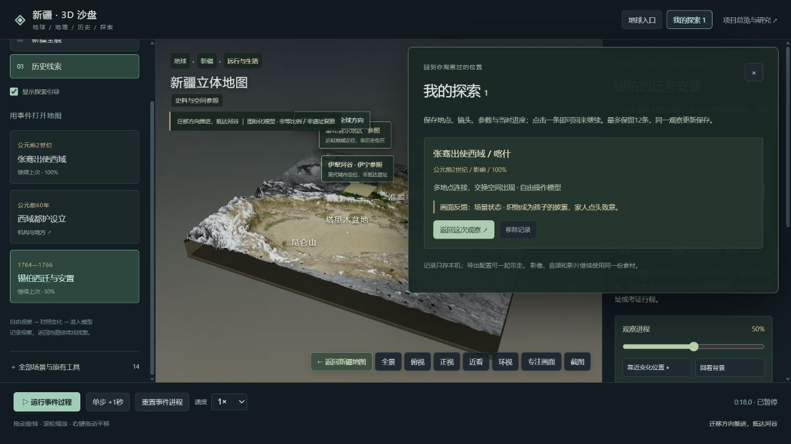
记录最多12条，同一观察更新保存。只在本机保存小型配置，不复制影像、模型或影片；导出配置也可带走记录。R35和R36旧配置兼容。
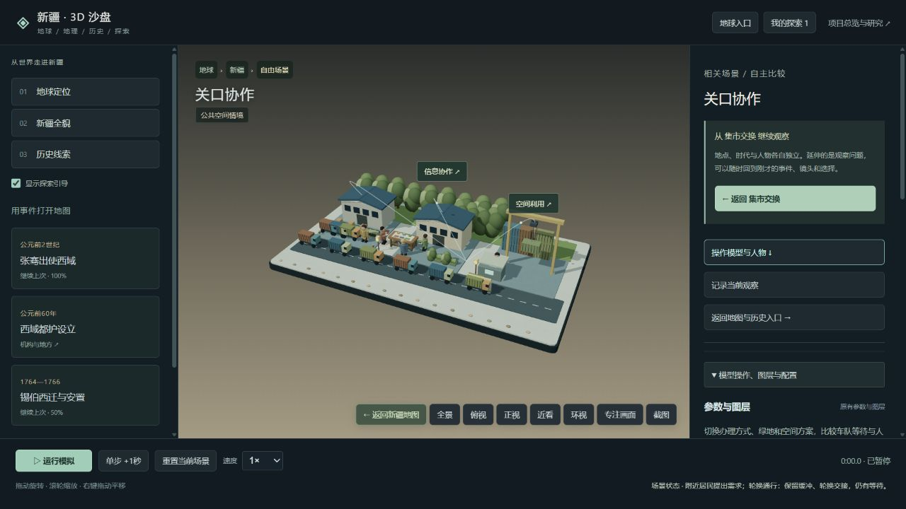
冰谷 → 地下水路 → 用水比较；集市 → 用水或当代关口；家庭 → 另一文化案例的庭院传习。进入相关场景后，可回到原事件、位置和选择。
这些连接是观察问题与机制的比较。不同地点、时代与社区各自独立，不代表实测相连水系、同一家庭的经历或历史人物的连续行程。原场景介绍与资料仍可在“模型操作、图层与配置”中展开。
保持“显示探索引导”时，页面给出当前变化与下一步；关闭后自由操作。下一步由用户点击才开始运行，停点可暂停或接管。地图、事件、地点、模型的顶部路径可直接返回；全部14个原有场景继续保留。
本轮使用路径、实际验证与增量记录 ↗00 / LIVE PLATFORM
转动地球，认识欧亚大陆与内陆位置。点定位标记进入区域。
看三山两盆、选择自然观察点，或从历史事件开始探索。
切换背景、过程与影响，地点高亮、路线延伸、队伍和建筑一起变化。
观察路线、结构与生活情境，调整参数与动作；返回恢复原来的视角。
事件有史料依据；地图地点是现代定位参照。教学廊道、抽象城址与人物情境分别注明性质，不作为逐站历史路线或遗址复原。地球到区域、区域到模型采用定位与过渡，尚未使用全球连续地形分级加载。
以下保留此前的五专题蓝图。当前入口已按全球 → 地理 → 历史事件 → 地点与模型实现；其余专题能力仍是扩展设计。
R36基础 / CONTROL THE EVENT
选事件 → 看背景 → 推进过程 → 看影响。
可随时拖动回看，再到地点模型中继续操作。
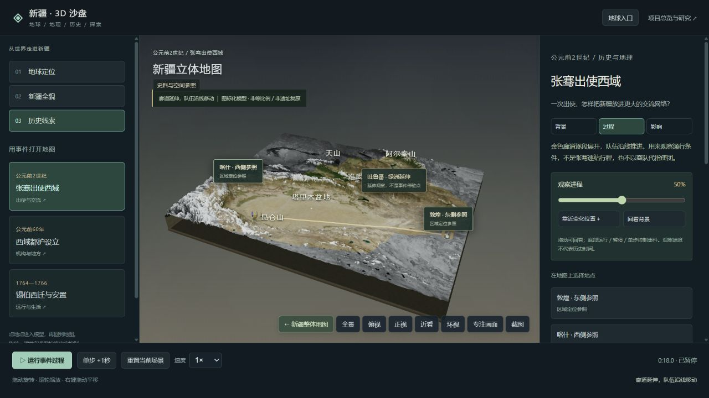
东侧入口、逐段展开的盆地廊道、移动队伍；之后交流连接与交换空间出现。进入集市可随进度观察搬运和交接。
操作这条事件 ↗现代地域参照、教学廊道与原创商队；不声称复原张骞逐站行程。长期网络也不是一次出使的即时结果。
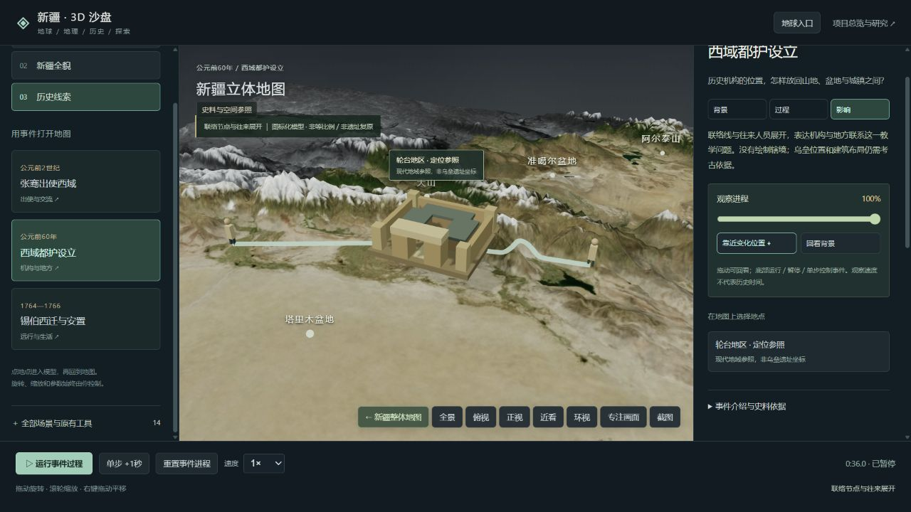
地方空间背景、抽象机构结构逐步显现、联络线与往来人员展开。进入结构可展开屋盖，观察城门、通道、围墙和内部空间。
操作这条事件 ↗轮台为地域参照，建筑和联络为教学图标。没有绘制辖境，不以模型推断乌垒遗址位置或布局。
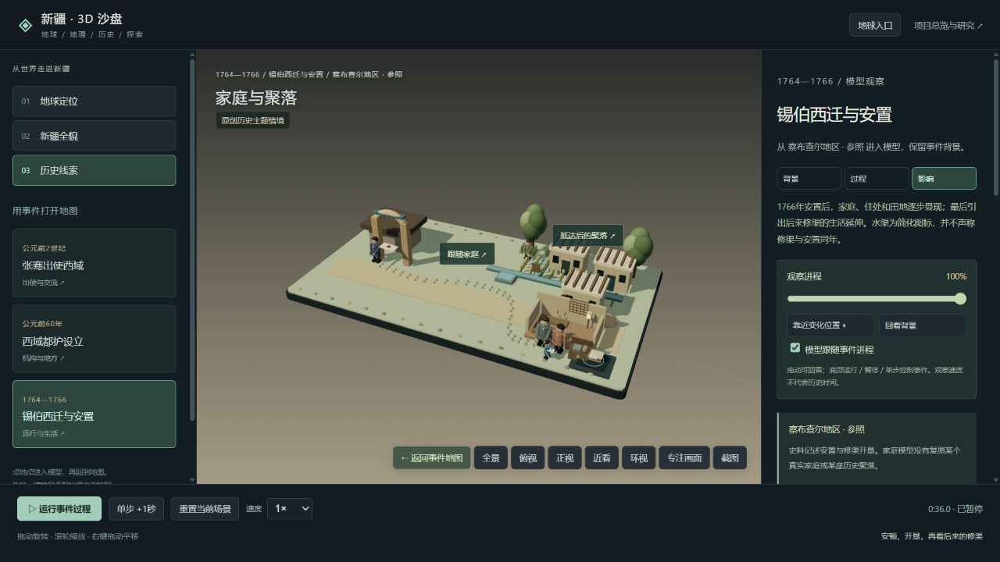
在小地球看盛京与伊犁方向，迁移推进后转到安置、住处、田地和后来的修渠。家庭模型继续对应远行、安顿、引水与记忆交接。
操作这条事件 ↗全球弧线仅示方向。人物和聚落原创；后续修渠与1766年安置分开说明。地下水路模型只作工程类比。
右侧拖动“观察进程”，或用底部运行、暂停、单步与速度。点“回看背景”比较变化，再点“恢复进程”。阶段按钮和“靠近变化位置”可定位变化，自由镜头随时可以接管；进入模型后保留事件阶段，操作原控件会接管模型，也可重新勾选联动。
三条事件切换会释放旧事件几何与材质，地球纹理继续共享。连续切换12次的GPU几何／纹理计数保持稳定；这项检查不代表整站的全部内存已优化。
本轮画面、源码、操作核验与去重记录 ↗02 / ARCHIVED STORY EXPLORATION
先确定位置与山地条件，再靠近真实地形与影像。
先看家门与田垄的需要，安排先后。先收到水的人继续生活，另一方等待，再接通另一支渠。
从行装里的缺口进入集市。交接后照护孩子、装包出发或继续制作，另外两位仍有需要。
切换到西迁历史案例，以引水、照护和行装观察生活。
观察或参与原创拍点练习，让示范、停顿与回应发生。
安排交接、通行与绿带空间；在地图上回看自己的选择。
这些是不同地点、年代与社区的案例。主线传递的是问题与关注，不表示一条实测水系、同一家庭的连续经历或同一物品的真实运输。
天池、雅丹缩略图为 R05 留档画面，冰谷、庭院为 R23 实帧；场景入口打开当前可操作版本。
04 / CURRENT SCOPE
张骞样板贯通地球、新疆地理、历史变化与喀什的具体需要；三条导演均有全幕旁白，用户可随时接管并返回地图。地点参照与实际观察继续保留，原有地理、事件、场景、原片与历史影片仍可探索。
后续重点是更好的近景资产、局部地形精度与可靠地方史，而不是继续堆叠入口和字幕。
三条事件、三个阶段、六个地域节点与四个自然入口，已接到地图和模型。事件可运行、暂停、单步、调速与倒退；回看背景会收回新增路线和模型，再恢复原进程。空间结构可以展开屋盖并选择部件。全部14个原场景、自由镜头、图层、参数、模拟时钟和配置导入导出保留；保存配置同时记录事件、地点、进度、速度、模型联动开关、视角和结构展开状态；R35配置仍可恢复。
进入与返回使用定位、镜头靠近和画面过渡；拖动后由用户控制镜头。尚未实现全球连续地形分级加载、史实逐站路线、考古测绘复原或经过标定的模拟。人物与文化情境仍为简化原创表达，后续应补具体地点的更多可靠资料与资产。
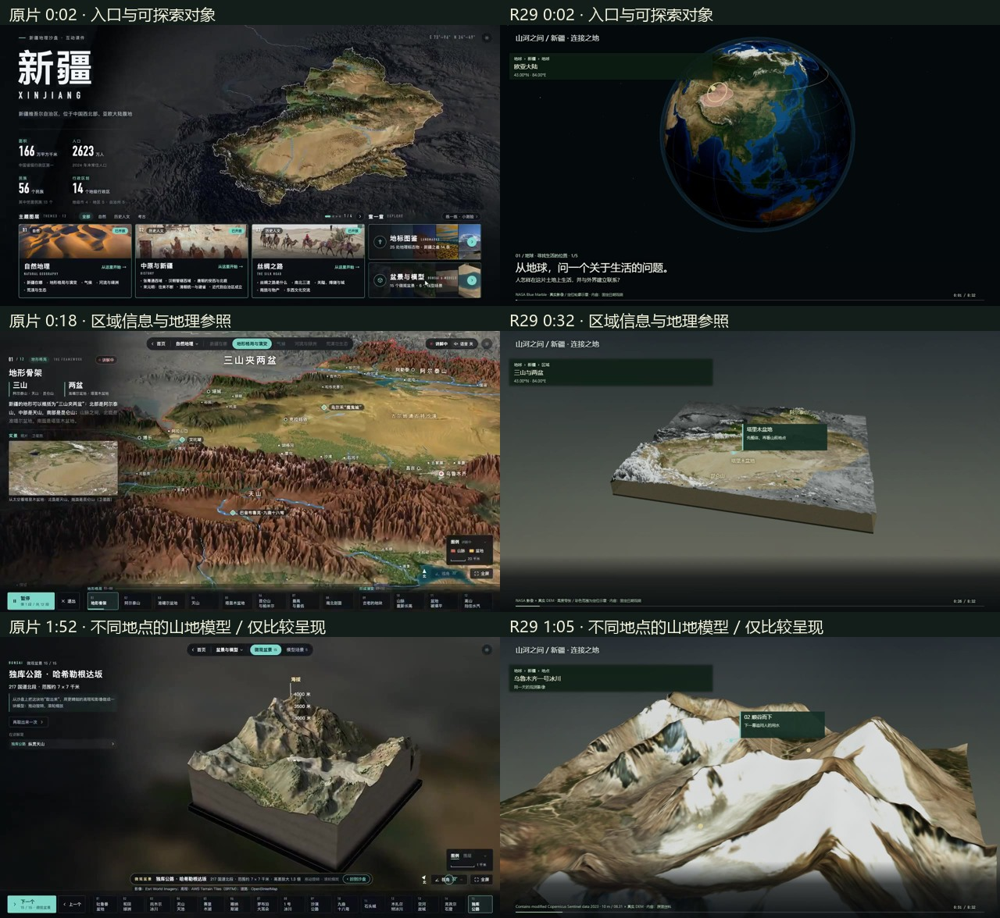
原片同屏交代新疆轮廓、主题与可探索对象。R29很快进入地球导览；区域裁片和边墙显眼，球体、区域与地点仍有模型替换感。应让同一位置与地理参照一直可辨。
当前 0:02、0:24、0:54 / 原片 0:02、0:10、0:18真实冰谷的近景仍有影像拉伸与表面细节不足。来水和人物活动已有，但优先照顾谁、另一方还在等待什么，需要更明显的生活动作；两处是比较案例。
当前 1:05、1:23、1:54物品与使用者、交接与回应能够对应。区域定位段较多，下一处新的需要未始终可见；可以收紧重复定位，把关注的人与待交接物品带进镜头。
当前 3:27、4:14、4:30集市、西迁家庭与庭院属于不同地点、时代和社区。现有讲解能说明比较，但时空门槛较弱，准备、旅程、安顿、传习之间主要由旁白连接。
当前 4:55、5:19、5:40、6:16、6:37、7:15从“给下一位留出停顿”进入“给不同使用者留出空间”，方向成立。但等待、通行、交接、维护的变化还不够大，应让每位人物回应眼前的实际后果。
当前 7:55、8:30、9:09、9:34五处都有回应载体，角色动作和短句节奏仍相近。先拍清得到帮助的人怎样继续生活、等待的人怎样调整，再打磨表情和口型。结尾要同时看见变化与未尽需要。
当前 1:54、4:30、6:16、7:15、9:09、10:09R31影片内嵌导览与所选人物对白。播放器下保留地点、案例性质、承接问题和41段实际语音文稿。工作台中的场景介绍按需展开，无需跟随影片时间阅读。
06 / DATA & REFERENCES
重采样、显示夸张与微弱法线细节，不等于更高的数据精度。
数据日期、范围、源地址与 SHA-256 ↗以资料支撑教学问题；动画没有运行经过标定的水文、侵蚀或政策预测模型。
查看完整数据与代码致谢 ↗原片只能证明可见展示，不能确认原引擎、模型格式、实时加载方式或地形精度。
Three.js 许可证 ↗